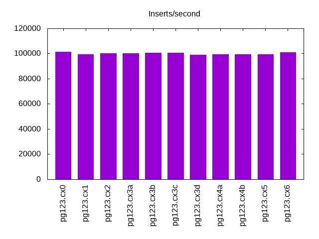
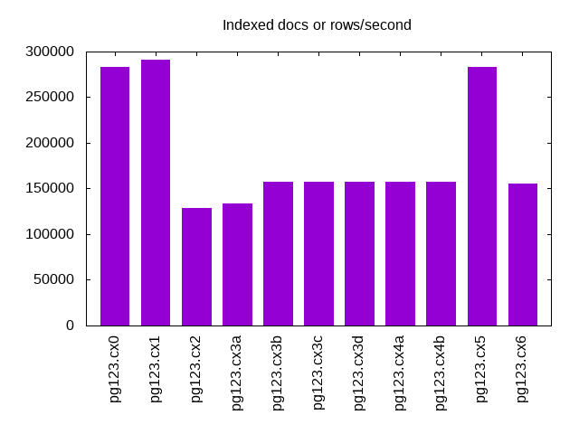
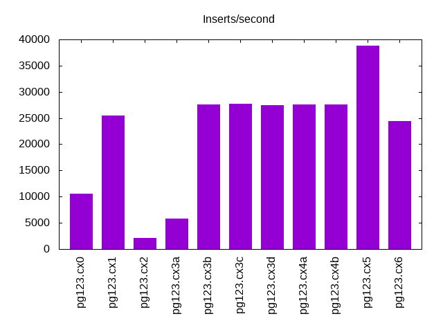
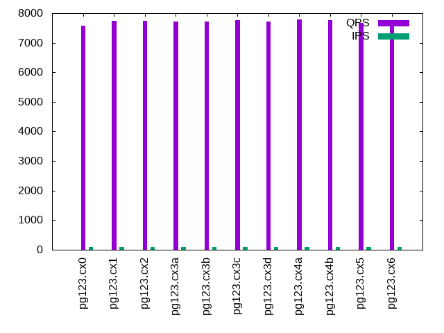
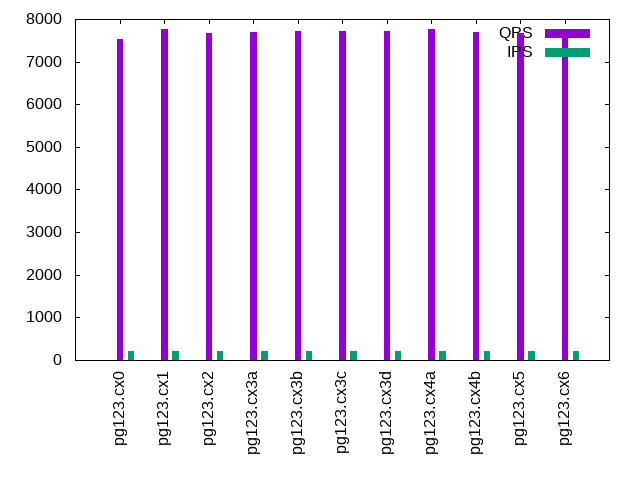
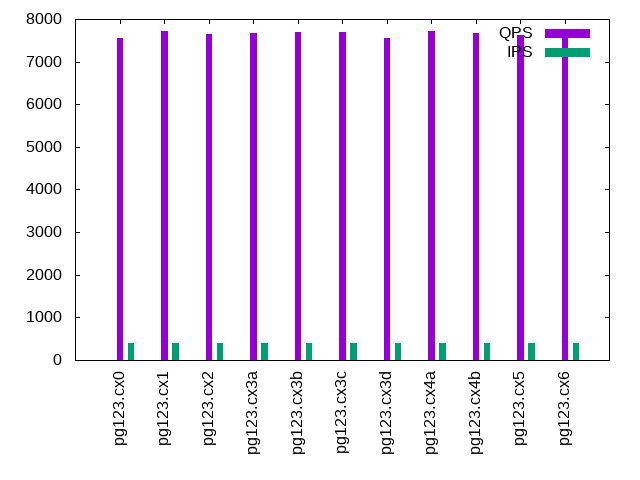
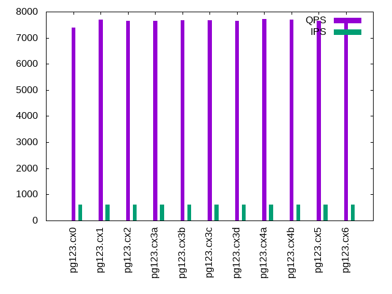
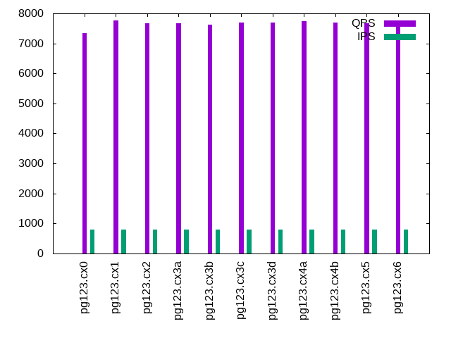
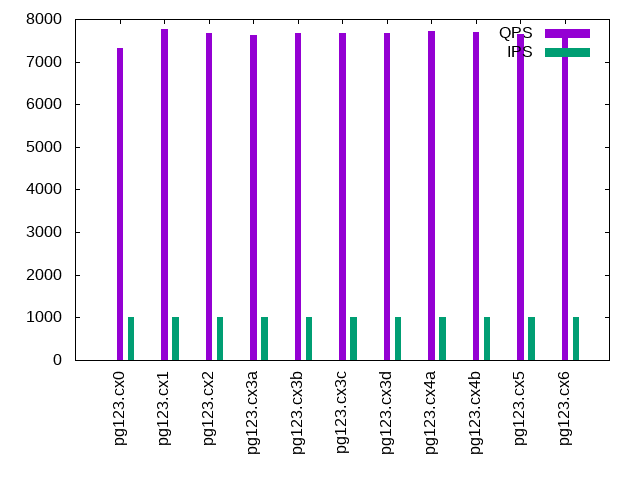

This is a report for the insert benchmark with 20M docs and 1 client(s). It is generated by scripts (bash, awk, sed) and Tufte might not be impressed. An overview of the insert benchmark is here and a short update is here. Below, by DBMS, I mean DBMS+version.config. An example is my8020.c10b40 where my means MySQL, 8020 is version 8.0.20 and c10b40 is the name for the configuration file.
The test server is described here. Clients and the DBMS shared the same host running Ubuntu 18.04.5. All tests used Postgres 12.3. The configurations for Postgres are here.
The numbers are inserts/s for l.i0 and l.i1, indexed docs (or rows) /s for l.x and queries/s for q*.2. The values are the average rate over the entire test for inserts (IPS) and queries (QPS). The range of values for IPS and QPS is split into 3 parts: bottom 25%, middle 50%, top 25%. Values in the bottom 25% have a red background, values in the top 25% have a green background and values in the middle have no color. A gray background is used for values that can be ignored because the DBMS did not sustain the target insert rate. Red backgrounds are not used when the minimum value is within 80% of the max value.
| dbms | l.i0 | l.x | l.i1 | q100.2 | q200.2 | q400.2 | q600.2 | q800.2 | q1000.2 |
|---|---|---|---|---|---|---|---|---|---|
| pg123.cx0 | 101523 | 283098 | 10532 | 7578 | 7541 | 7549 | 7391 | 7353 | 7313 |
| pg123.cx1 | 99502 | 291304 | 25413 | 7750 | 7760 | 7720 | 7704 | 7757 | 7763 |
| pg123.cx2 | 100000 | 128846 | 2123 | 7750 | 7679 | 7649 | 7653 | 7670 | 7670 |
| pg123.cx3a | 100000 | 134000 | 5828 | 7715 | 7698 | 7674 | 7650 | 7670 | 7632 |
| pg123.cx3b | 100502 | 157031 | 27624 | 7707 | 7708 | 7688 | 7674 | 7628 | 7660 |
| pg123.cx3c | 100502 | 157031 | 27662 | 7755 | 7729 | 7698 | 7669 | 7701 | 7669 |
| pg123.cx3d | 99010 | 157031 | 27510 | 7710 | 7714 | 7564 | 7644 | 7699 | 7662 |
| pg123.cx4a | 99502 | 157031 | 27548 | 7783 | 7758 | 7730 | 7728 | 7738 | 7712 |
| pg123.cx4b | 99502 | 157031 | 27586 | 7755 | 7689 | 7681 | 7691 | 7690 | 7697 |
| pg123.cx5 | 99502 | 283098 | 38760 | 7666 | 7671 | 7636 | 7652 | 7682 | 7649 |
| pg123.cx6 | 101010 | 155814 | 24420 | 7744 | 7686 | 7696 | 7679 | 7680 | 7690 |
This lists the average rate of inserts/s for the tests that do inserts concurrent with queries. For such tests the query rate is listed in the table above. The read+write tests are setup so that the insert rate should match the target rate every second. Cells that are not at least 95% of the target have a red background to indicate a failure to satisfy the target.
| dbms | q100.2 | q200.2 | q400.2 | q600.2 | q800.2 | q1000.2 |
|---|---|---|---|---|---|---|
| pg123.cx0 | 100 | 200 | 399 | 599 | 799 | 998 |
| pg123.cx1 | 100 | 200 | 399 | 599 | 799 | 998 |
| pg123.cx2 | 100 | 200 | 399 | 599 | 799 | 998 |
| pg123.cx3a | 100 | 200 | 399 | 599 | 799 | 998 |
| pg123.cx3b | 100 | 200 | 399 | 599 | 799 | 998 |
| pg123.cx3c | 100 | 200 | 399 | 599 | 799 | 998 |
| pg123.cx3d | 100 | 200 | 399 | 599 | 799 | 998 |
| pg123.cx4a | 100 | 200 | 399 | 599 | 799 | 998 |
| pg123.cx4b | 100 | 200 | 399 | 599 | 799 | 998 |
| pg123.cx5 | 100 | 200 | 399 | 599 | 799 | 998 |
| pg123.cx6 | 100 | 200 | 399 | 599 | 799 | 999 |
| target | 100 | 200 | 400 | 600 | 800 | 1000 |
l.i0: load without secondary indexes. Graphs for performance per 1-second interval are here.
Average throughput:
Insert response time histogram: each cell has the percentage of responses that take <= the time in the header and max is the max response time in seconds. For the max column values in the top 25% of the range have a red background and in the bottom 25% of the range have a green background. The red background is not used when the min value is within 80% of the max value.
| dbms | 256us | 1ms | 4ms | 16ms | 64ms | 256ms | 1s | 4s | 16s | gt | max |
|---|---|---|---|---|---|---|---|---|---|---|---|
| pg123.cx0 | 87.536 | 12.461 | 0.002 | 0.001 | 0.028 | ||||||
| pg123.cx1 | 82.558 | 17.437 | 0.004 | 0.001 | 0.021 | ||||||
| pg123.cx2 | 86.166 | 13.829 | 0.004 | 0.001 | 0.023 | ||||||
| pg123.cx3a | 84.323 | 15.676 | 0.001 | 0.001 | 0.020 | ||||||
| pg123.cx3b | 86.224 | 13.776 | 0.001 | 0.005 | |||||||
| pg123.cx3c | 87.532 | 12.466 | 0.002 | 0.005 | |||||||
| pg123.cx3d | 75.791 | 24.209 | 0.001 | 0.006 | |||||||
| pg123.cx4a | 80.856 | 19.141 | 0.003 | 0.009 | |||||||
| pg123.cx4b | 82.467 | 17.533 | 0.001 | 0.008 | |||||||
| pg123.cx5 | 80.027 | 19.971 | 0.002 | 0.009 | |||||||
| pg123.cx6 | 86.948 | 13.051 | 0.002 | 0.005 |
Performance metrics for the DBMS listed above. Some are normalized by throughput, others are not. Legend for results is here.
ips qps rps rkbps wkbps rpq rkbpq wkbpi csps cpups cspq cpupq dbgb1 dbgb2 rss maxop p50 p99 tag 101523 0 0 0 49434 0.000 0.000 0.487 12524 46.7 0.123 18 1.9 3.0 0.0 0.028 101725 96489 pg123.cx0 99502 0 0 0 49799 0.000 0.000 0.500 12211 46.1 0.123 19 1.9 3.0 0.0 0.021 100091 81026 pg123.cx1 100000 0 0 0 47824 0.000 0.000 0.478 12185 48.4 0.122 19 1.9 3.0 0.0 0.023 101189 80811 pg123.cx2 100000 0 0 0 59164 0.000 0.000 0.592 12360 46.9 0.124 19 1.9 4.0 0.0 0.020 100593 79612 pg123.cx3a 100502 0 0 0 64641 0.000 0.000 0.643 12496 46.5 0.124 19 1.9 5.2 0.0 0.005 101190 80252 pg123.cx3b 100502 0 0 0 62545 0.000 0.000 0.622 12490 46.5 0.124 19 1.9 5.2 0.0 0.005 101361 80212 pg123.cx3c 99010 0 0 0 63220 0.000 0.000 0.639 12280 45.6 0.124 18 1.9 5.2 0.0 0.006 99091 84802 pg123.cx3d 99502 0 0 0 64609 0.000 0.000 0.649 12356 45.9 0.124 18 1.9 5.2 0.0 0.009 99789 80712 pg123.cx4a 99502 0 0 0 64878 0.000 0.000 0.652 12454 46.2 0.125 19 1.9 5.2 0.0 0.008 100290 80412 pg123.cx4b 99502 0 0 0 64609 0.000 0.000 0.649 12323 45.8 0.124 18 1.9 5.2 0.0 0.009 99694 80828 pg123.cx5 101010 0 0 0 64851 0.000 0.000 0.642 12534 46.5 0.124 18 1.9 5.2 0.0 0.005 101488 80315 pg123.cx6
l.x: create secondary indexes.
Average throughput:
Performance metrics for the DBMS listed above. Some are normalized by throughput, others are not. Legend for results is here.
ips qps rps rkbps wkbps rpq rkbpq wkbpi csps cpups cspq cpupq dbgb1 dbgb2 rss maxop p50 p99 tag 283098 0 0 0 82377 0.000 0.000 0.291 1400 24.7 0.005 3 3.7 4.7 0.0 0.002 NA NA pg123.cx0 291304 0 0 0 99952 0.000 0.000 0.343 1319 25.5 0.005 4 3.7 4.7 0.0 0.002 NA NA pg123.cx1 128846 0 0 0 48203 0.000 0.000 0.374 667 24.7 0.005 8 3.7 4.7 0.0 0.002 NA NA pg123.cx2 134000 0 0 0 53385 0.000 0.000 0.398 706 24.6 0.005 7 3.7 5.7 0.0 0.002 NA NA pg123.cx3a 157031 0 0 0 65624 0.000 0.000 0.418 1104 24.6 0.007 6 3.7 7.9 0.0 0.002 NA NA pg123.cx3b 157031 0 0 0 65641 0.000 0.000 0.418 1095 24.7 0.007 6 3.7 7.9 0.0 0.002 NA NA pg123.cx3c 157031 0 0 0 68030 0.000 0.000 0.433 1099 24.5 0.007 6 3.7 7.9 0.0 0.002 NA NA pg123.cx3d 157031 0 0 0 65806 0.000 0.000 0.419 1095 24.6 0.007 6 3.7 7.9 0.0 0.002 NA NA pg123.cx4a 157031 0 0 0 65695 0.000 0.000 0.418 1094 24.8 0.007 6 3.7 7.9 0.0 0.002 NA NA pg123.cx4b 283098 0 0 0 106818 0.000 0.000 0.377 2378 24.6 0.008 3 3.7 8.6 0.0 0.002 NA NA pg123.cx5 155814 0 0 0 65186 0.000 0.000 0.418 1065 24.5 0.007 6 3.7 7.9 0.0 0.002 NA NA pg123.cx6
l.i1: continue load after secondary indexes created. Graphs for performance per 1-second interval are here.
Average throughput:
Insert response time histogram: each cell has the percentage of responses that take <= the time in the header and max is the max response time in seconds. For the max column values in the top 25% of the range have a red background and in the bottom 25% of the range have a green background. The red background is not used when the min value is within 80% of the max value.
| dbms | 256us | 1ms | 4ms | 16ms | 64ms | 256ms | 1s | 4s | 16s | gt | max |
|---|---|---|---|---|---|---|---|---|---|---|---|
| pg123.cx0 | 81.159 | 16.611 | 1.736 | 0.493 | 0.244 | ||||||
| pg123.cx1 | 95.796 | 3.341 | 0.786 | 0.076 | nonzero | 0.325 | |||||
| pg123.cx2 | 15.848 | 84.152 | 0.001 | 0.072 | |||||||
| pg123.cx3a | 44.874 | 36.858 | 18.268 | 0.049 | |||||||
| pg123.cx3b | 96.076 | 2.676 | 1.248 | nonzero | nonzero | 0.373 | |||||
| pg123.cx3c | 96.091 | 2.660 | 1.249 | nonzero | 0.171 | ||||||
| pg123.cx3d | 96.085 | 2.671 | 1.244 | 0.058 | |||||||
| pg123.cx4a | 96.106 | 2.646 | 1.248 | 0.001 | nonzero | 0.286 | |||||
| pg123.cx4b | 96.095 | 2.655 | 1.249 | nonzero | 0.147 | ||||||
| pg123.cx5 | 99.863 | 0.111 | 0.024 | 0.001 | nonzero | 0.487 | |||||
| pg123.cx6 | 96.084 | 2.726 | 1.191 | 0.047 |
Performance metrics for the DBMS listed above. Some are normalized by throughput, others are not. Legend for results is here.
ips qps rps rkbps wkbps rpq rkbpq wkbpi csps cpups cspq cpupq dbgb1 dbgb2 rss maxop p50 p99 tag 10532 0 0 0 435861 0.000 0.000 41.385 4875 26.5 0.463 101 8.2 9.2 0.0 0.244 11985 2397 pg123.cx0 25413 0 0 0 613312 0.000 0.000 24.134 11619 36.4 0.457 57 8.2 13.0 0.0 0.325 26270 7741 pg123.cx1 2123 0 0 0 49871 0.000 0.000 23.490 941 25.7 0.443 484 8.2 9.2 0.0 0.072 1949 1249 pg123.cx2 5828 0 0 0 48126 0.000 0.000 8.258 1793 26.6 0.308 183 8.2 10.2 0.0 0.049 2949 1249 pg123.cx3a 27624 0 0 0 54060 0.000 0.000 1.957 6931 32.0 0.251 46 8.2 15.5 0.0 0.373 35561 1448 pg123.cx3b 27662 0 0 0 53994 0.000 0.000 1.952 6928 32.0 0.250 46 8.2 15.5 0.0 0.171 35462 1400 pg123.cx3c 27510 0 0 0 53320 0.000 0.000 1.938 6904 32.0 0.251 47 8.2 15.4 0.0 0.058 35311 1448 pg123.cx3d 27548 0 0 0 52705 0.000 0.000 1.913 6923 32.0 0.251 46 8.2 15.4 0.0 0.286 35275 1448 pg123.cx4a 27586 0 0 0 53163 0.000 0.000 1.927 6980 32.1 0.253 47 8.2 15.4 0.0 0.147 35489 1400 pg123.cx4b 38760 0 0 0 89451 0.000 0.000 2.308 9935 34.9 0.256 36 8.2 19.5 0.0 0.487 40356 12734 pg123.cx5 24420 0 28 280 153939 0.001 0.011 6.304 7062 33.7 0.289 55 8.2 14.7 0.0 0.047 30368 1499 pg123.cx6
q100.2: range queries with 100 insert/s per client, 2nd loop. Graphs for performance per 1-second interval are here.
Average throughput:
Query response time histogram: each cell has the percentage of responses that take <= the time in the header and max is the max response time in seconds. For max values in the top 25% of the range have a red background and in the bottom 25% of the range have a green background. The red background is not used when the min value is within 80% of the max value.
| dbms | 256us | 1ms | 4ms | 16ms | 64ms | 256ms | 1s | 4s | 16s | gt | max |
|---|---|---|---|---|---|---|---|---|---|---|---|
| pg123.cx0 | 99.978 | 0.021 | 0.001 | nonzero | 0.007 | ||||||
| pg123.cx1 | 99.985 | 0.014 | 0.001 | 0.004 | |||||||
| pg123.cx2 | 99.986 | 0.014 | nonzero | nonzero | 0.015 | ||||||
| pg123.cx3a | 99.985 | 0.014 | nonzero | nonzero | 0.013 | ||||||
| pg123.cx3b | 99.985 | 0.015 | nonzero | nonzero | 0.013 | ||||||
| pg123.cx3c | 99.985 | 0.015 | nonzero | nonzero | 0.013 | ||||||
| pg123.cx3d | 99.984 | 0.016 | nonzero | nonzero | 0.012 | ||||||
| pg123.cx4a | 99.985 | 0.015 | nonzero | nonzero | 0.013 | ||||||
| pg123.cx4b | 99.985 | 0.015 | nonzero | nonzero | 0.014 | ||||||
| pg123.cx5 | 99.986 | 0.014 | 0.001 | 0.004 | |||||||
| pg123.cx6 | 99.986 | 0.014 | nonzero | nonzero | 0.010 |
Insert response time histogram: each cell has the percentage of responses that take <= the time in the header and max is the max response time in seconds. For max values in the top 25% of the range have a red background and in the bottom 25% of the range have a green background. The red background is not used when the min value is within 80% of the max value.
| dbms | 256us | 1ms | 4ms | 16ms | 64ms | 256ms | 1s | 4s | 16s | gt | max |
|---|---|---|---|---|---|---|---|---|---|---|---|
| pg123.cx0 | 99.972 | 0.028 | 0.004 | ||||||||
| pg123.cx1 | 99.944 | 0.056 | 0.006 | ||||||||
| pg123.cx2 | 100.000 | 0.050 | |||||||||
| pg123.cx3a | 100.000 | 0.044 | |||||||||
| pg123.cx3b | 100.000 | 0.044 | |||||||||
| pg123.cx3c | 100.000 | 0.043 | |||||||||
| pg123.cx3d | 100.000 | 0.046 | |||||||||
| pg123.cx4a | 100.000 | 0.043 | |||||||||
| pg123.cx4b | 100.000 | 0.044 | |||||||||
| pg123.cx5 | 99.972 | 0.028 | 0.006 | ||||||||
| pg123.cx6 | 100.000 | 0.043 |
Performance metrics for the DBMS listed above. Some are normalized by throughput, others are not. Legend for results is here.
ips qps rps rkbps wkbps rpq rkbpq wkbpi csps cpups cspq cpupq dbgb1 dbgb2 rss maxop p50 p99 tag 100 7578 0 0 4341 0.000 0.000 43.500 29186 25.2 3.851 133 8.2 9.3 0.0 0.007 7576 7496 pg123.cx0 100 7750 0 0 4541 0.000 0.000 45.505 29837 25.1 3.850 130 8.2 9.3 0.0 0.004 7752 7655 pg123.cx1 100 7750 0 0 3283 0.000 0.000 32.899 29850 27.0 3.851 139 8.2 9.0 0.0 0.015 7752 7656 pg123.cx2 100 7715 0 0 3469 0.000 0.000 34.761 29716 27.0 3.852 140 8.2 9.3 0.0 0.013 7720 7624 pg123.cx3a 100 7707 0 0 4289 0.000 0.000 42.978 29684 27.0 3.852 140 8.2 12.5 0.0 0.013 7719 7608 pg123.cx3b 100 7755 0 0 4286 0.000 0.000 42.948 29868 26.9 3.851 139 8.2 12.5 0.0 0.013 7767 7656 pg123.cx3c 100 7710 0 0 4217 0.000 0.000 42.251 29694 27.0 3.851 140 8.2 12.4 0.0 0.012 7719 7608 pg123.cx3d 100 7783 0 0 4223 0.000 0.000 42.313 29976 27.0 3.851 139 8.2 12.4 0.0 0.013 7784 7672 pg123.cx4a 100 7755 0 0 4305 0.000 0.000 43.137 29864 27.0 3.851 139 8.2 12.5 0.0 0.014 7758 7656 pg123.cx4b 100 7666 0 0 5884 0.000 0.000 58.958 29514 25.1 3.850 131 8.2 14.2 0.0 0.004 7672 7576 pg123.cx5 100 7744 0 0 4224 0.000 0.000 42.325 29829 27.1 3.852 140 8.2 11.7 0.0 0.010 7751 7656 pg123.cx6
q200.2: range queries with 200 insert/s per client, 2nd loop. Graphs for performance per 1-second interval are here.
Average throughput:
Query response time histogram: each cell has the percentage of responses that take <= the time in the header and max is the max response time in seconds. For max values in the top 25% of the range have a red background and in the bottom 25% of the range have a green background. The red background is not used when the min value is within 80% of the max value.
| dbms | 256us | 1ms | 4ms | 16ms | 64ms | 256ms | 1s | 4s | 16s | gt | max |
|---|---|---|---|---|---|---|---|---|---|---|---|
| pg123.cx0 | 99.974 | 0.024 | 0.002 | 0.004 | |||||||
| pg123.cx1 | 99.985 | 0.014 | 0.001 | nonzero | 0.009 | ||||||
| pg123.cx2 | 99.980 | 0.019 | 0.001 | nonzero | 0.013 | ||||||
| pg123.cx3a | 99.979 | 0.020 | nonzero | nonzero | nonzero | 0.019 | |||||
| pg123.cx3b | 99.981 | 0.019 | nonzero | nonzero | 0.011 | ||||||
| pg123.cx3c | 99.979 | 0.020 | nonzero | nonzero | 0.013 | ||||||
| pg123.cx3d | 99.977 | 0.022 | nonzero | nonzero | 0.014 | ||||||
| pg123.cx4a | 99.980 | 0.019 | nonzero | nonzero | nonzero | 0.018 | |||||
| pg123.cx4b | 99.980 | 0.020 | nonzero | nonzero | 0.012 | ||||||
| pg123.cx5 | 99.983 | 0.015 | 0.002 | nonzero | 0.004 | ||||||
| pg123.cx6 | 99.978 | 0.021 | 0.001 | nonzero | 0.012 |
Insert response time histogram: each cell has the percentage of responses that take <= the time in the header and max is the max response time in seconds. For max values in the top 25% of the range have a red background and in the bottom 25% of the range have a green background. The red background is not used when the min value is within 80% of the max value.
| dbms | 256us | 1ms | 4ms | 16ms | 64ms | 256ms | 1s | 4s | 16s | gt | max |
|---|---|---|---|---|---|---|---|---|---|---|---|
| pg123.cx0 | 99.931 | 0.069 | 0.012 | ||||||||
| pg123.cx1 | 99.986 | 0.014 | 0.006 | ||||||||
| pg123.cx2 | 100.000 | 0.046 | |||||||||
| pg123.cx3a | 100.000 | 0.046 | |||||||||
| pg123.cx3b | 100.000 | 0.047 | |||||||||
| pg123.cx3c | 100.000 | 0.045 | |||||||||
| pg123.cx3d | 100.000 | 0.043 | |||||||||
| pg123.cx4a | 100.000 | 0.044 | |||||||||
| pg123.cx4b | 100.000 | 0.045 | |||||||||
| pg123.cx5 | 99.986 | 0.014 | 0.006 | ||||||||
| pg123.cx6 | 100.000 | 0.044 |
Performance metrics for the DBMS listed above. Some are normalized by throughput, others are not. Legend for results is here.
ips qps rps rkbps wkbps rpq rkbpq wkbpi csps cpups cspq cpupq dbgb1 dbgb2 rss maxop p50 p99 tag 200 7541 0 0 8537 0.000 0.000 42.772 29082 25.4 3.857 135 8.4 9.4 0.0 0.004 7544 7464 pg123.cx0 200 7760 0 0 7908 0.000 0.000 39.617 29902 25.3 3.853 130 8.4 9.4 0.0 0.009 7767 7656 pg123.cx1 200 7679 0 0 5594 0.000 0.000 28.027 29611 28.6 3.856 149 8.4 9.3 0.0 0.013 7687 7576 pg123.cx2 200 7698 0 0 5618 0.000 0.000 28.146 29681 28.8 3.856 150 8.4 9.4 0.0 0.019 7703 7599 pg123.cx3a 200 7708 0 0 5864 0.000 0.000 29.380 29724 28.6 3.856 148 8.4 9.9 0.0 0.011 7719 7608 pg123.cx3b 200 7729 0 0 5884 0.000 0.000 29.479 29803 28.5 3.856 147 8.4 9.9 0.0 0.013 7735 7624 pg123.cx3c 200 7714 0 0 5838 0.000 0.000 29.247 29746 28.6 3.856 148 8.4 9.9 0.0 0.014 7719 7608 pg123.cx3d 200 7758 0 0 5869 0.000 0.000 29.405 29909 28.5 3.855 147 8.4 9.9 0.0 0.018 7767 7656 pg123.cx4a 200 7689 0 0 5944 0.000 0.000 29.779 29649 28.5 3.856 148 8.4 9.9 0.0 0.012 7688 7592 pg123.cx4b 200 7671 0 0 7487 0.000 0.000 37.508 29556 25.3 3.853 132 8.4 10.9 0.0 0.004 7672 7565 pg123.cx5 200 7686 0 0 6213 0.000 0.000 31.125 29640 28.8 3.856 150 8.4 9.8 0.0 0.012 7688 7594 pg123.cx6
q400.2: range queries with 400 insert/s per client, 2nd loop. Graphs for performance per 1-second interval are here.
Average throughput:
Query response time histogram: each cell has the percentage of responses that take <= the time in the header and max is the max response time in seconds. For max values in the top 25% of the range have a red background and in the bottom 25% of the range have a green background. The red background is not used when the min value is within 80% of the max value.
| dbms | 256us | 1ms | 4ms | 16ms | 64ms | 256ms | 1s | 4s | 16s | gt | max |
|---|---|---|---|---|---|---|---|---|---|---|---|
| pg123.cx0 | 99.931 | 0.065 | 0.004 | nonzero | nonzero | 0.021 | |||||
| pg123.cx1 | 99.966 | 0.030 | 0.004 | nonzero | 0.011 | ||||||
| pg123.cx2 | 99.951 | 0.046 | 0.002 | 0.001 | nonzero | 0.019 | |||||
| pg123.cx3a | 99.961 | 0.036 | 0.002 | 0.001 | 0.013 | ||||||
| pg123.cx3b | 99.959 | 0.038 | 0.003 | 0.001 | 0.015 | ||||||
| pg123.cx3c | 99.958 | 0.038 | 0.003 | 0.001 | nonzero | 0.020 | |||||
| pg123.cx3d | 99.956 | 0.041 | 0.003 | 0.001 | 0.014 | ||||||
| pg123.cx4a | 99.958 | 0.039 | 0.002 | 0.001 | nonzero | 0.018 | |||||
| pg123.cx4b | 99.958 | 0.039 | 0.003 | 0.001 | 0.013 | ||||||
| pg123.cx5 | 99.970 | 0.026 | 0.004 | nonzero | 0.005 | ||||||
| pg123.cx6 | 99.955 | 0.041 | 0.003 | 0.001 | 0.011 |
Insert response time histogram: each cell has the percentage of responses that take <= the time in the header and max is the max response time in seconds. For max values in the top 25% of the range have a red background and in the bottom 25% of the range have a green background. The red background is not used when the min value is within 80% of the max value.
| dbms | 256us | 1ms | 4ms | 16ms | 64ms | 256ms | 1s | 4s | 16s | gt | max |
|---|---|---|---|---|---|---|---|---|---|---|---|
| pg123.cx0 | 92.368 | 7.451 | 0.181 | 0.053 | |||||||
| pg123.cx1 | 99.979 | 0.021 | 0.006 | ||||||||
| pg123.cx2 | 100.000 | 0.048 | |||||||||
| pg123.cx3a | 2.514 | 97.486 | 0.049 | ||||||||
| pg123.cx3b | 3.083 | 96.917 | 0.046 | ||||||||
| pg123.cx3c | 3.319 | 96.681 | 0.045 | ||||||||
| pg123.cx3d | 3.076 | 96.924 | 0.045 | ||||||||
| pg123.cx4a | 3.125 | 96.875 | 0.054 | ||||||||
| pg123.cx4b | 3.153 | 96.847 | 0.045 | ||||||||
| pg123.cx5 | 99.993 | 0.007 | 0.006 | ||||||||
| pg123.cx6 | 2.660 | 97.340 | 0.044 |
Performance metrics for the DBMS listed above. Some are normalized by throughput, others are not. Legend for results is here.
ips qps rps rkbps wkbps rpq rkbpq wkbpi csps cpups cspq cpupq dbgb1 dbgb2 rss maxop p50 p99 tag 399 7549 0 0 17131 0.000 0.000 42.902 29229 25.7 3.872 136 8.8 9.9 0.0 0.021 7560 7432 pg123.cx0 399 7720 0 0 15658 0.000 0.000 39.214 29825 25.7 3.864 133 8.8 9.9 0.0 0.011 7720 7624 pg123.cx1 399 7649 0 0 11147 0.000 0.000 27.916 29548 31.8 3.863 166 8.8 9.9 0.0 0.019 7656 7512 pg123.cx2 399 7674 0 0 9213 0.000 0.000 23.073 29646 30.9 3.863 161 8.8 10.4 0.0 0.013 7672 7560 pg123.cx3a 399 7688 0 0 9365 0.000 0.000 23.453 29703 30.8 3.863 160 8.8 10.4 0.0 0.015 7690 7560 pg123.cx3b 399 7698 0 0 9298 0.000 0.000 23.286 29740 30.8 3.863 160 8.8 10.4 0.0 0.020 7704 7566 pg123.cx3c 399 7564 0 0 9270 0.000 0.000 23.215 29234 30.7 3.865 162 8.8 10.4 0.0 0.014 7576 7448 pg123.cx3d 399 7730 0 0 9276 0.000 0.000 23.232 29873 30.8 3.864 159 8.8 10.4 0.0 0.018 7735 7608 pg123.cx4a 399 7681 0 0 9314 0.000 0.000 23.326 29689 30.7 3.865 160 8.8 10.4 0.0 0.013 7688 7544 pg123.cx4b 399 7636 0 0 11608 0.000 0.000 29.070 29477 25.6 3.860 134 8.8 11.4 0.0 0.005 7640 7528 pg123.cx5 399 7696 0 0 10139 0.000 0.000 25.393 29746 30.9 3.865 161 8.8 10.4 0.0 0.011 7703 7592 pg123.cx6
q600.2: range queries with 600 insert/s per client, 2nd loop. Graphs for performance per 1-second interval are here.
Average throughput:
Query response time histogram: each cell has the percentage of responses that take <= the time in the header and max is the max response time in seconds. For max values in the top 25% of the range have a red background and in the bottom 25% of the range have a green background. The red background is not used when the min value is within 80% of the max value.
| dbms | 256us | 1ms | 4ms | 16ms | 64ms | 256ms | 1s | 4s | 16s | gt | max |
|---|---|---|---|---|---|---|---|---|---|---|---|
| pg123.cx0 | 99.887 | 0.105 | 0.008 | nonzero | nonzero | 0.038 | |||||
| pg123.cx1 | 99.938 | 0.054 | 0.008 | nonzero | 0.012 | ||||||
| pg123.cx2 | 99.916 | 0.079 | 0.003 | 0.001 | 0.013 | ||||||
| pg123.cx3a | 99.936 | 0.060 | 0.003 | 0.001 | 0.013 | ||||||
| pg123.cx3b | 99.931 | 0.064 | 0.004 | 0.001 | 0.012 | ||||||
| pg123.cx3c | 99.938 | 0.057 | 0.004 | 0.001 | 0.013 | ||||||
| pg123.cx3d | 99.937 | 0.059 | 0.003 | 0.001 | 0.013 | ||||||
| pg123.cx4a | 99.933 | 0.062 | 0.004 | 0.001 | 0.012 | ||||||
| pg123.cx4b | 99.936 | 0.059 | 0.004 | 0.001 | 0.012 | ||||||
| pg123.cx5 | 99.951 | 0.042 | 0.007 | nonzero | 0.006 | ||||||
| pg123.cx6 | 99.936 | 0.059 | 0.004 | 0.001 | 0.013 |
Insert response time histogram: each cell has the percentage of responses that take <= the time in the header and max is the max response time in seconds. For max values in the top 25% of the range have a red background and in the bottom 25% of the range have a green background. The red background is not used when the min value is within 80% of the max value.
| dbms | 256us | 1ms | 4ms | 16ms | 64ms | 256ms | 1s | 4s | 16s | gt | max |
|---|---|---|---|---|---|---|---|---|---|---|---|
| pg123.cx0 | 89.398 | 10.338 | 0.264 | 0.052 | |||||||
| pg123.cx1 | 99.898 | 0.102 | 0.012 | ||||||||
| pg123.cx2 | 0.014 | 99.986 | 0.043 | ||||||||
| pg123.cx3a | 30.778 | 69.222 | 0.042 | ||||||||
| pg123.cx3b | 31.782 | 68.218 | 0.041 | ||||||||
| pg123.cx3c | 32.352 | 67.648 | 0.041 | ||||||||
| pg123.cx3d | 31.204 | 68.796 | 0.049 | ||||||||
| pg123.cx4a | 32.236 | 67.764 | 0.044 | ||||||||
| pg123.cx4b | 32.153 | 67.847 | 0.042 | ||||||||
| pg123.cx5 | 99.944 | 0.056 | 0.007 | ||||||||
| pg123.cx6 | 30.958 | 69.042 | 0.042 |
Performance metrics for the DBMS listed above. Some are normalized by throughput, others are not. Legend for results is here.
ips qps rps rkbps wkbps rpq rkbpq wkbpi csps cpups cspq cpupq dbgb1 dbgb2 rss maxop p50 p99 tag 599 7391 0 0 24877 0.000 0.000 41.531 28736 26.0 3.888 141 10.0 11.0 0.0 0.038 7400 7112 pg123.cx0 599 7704 0 0 23412 0.000 0.000 39.085 29857 26.2 3.875 136 10.0 11.0 0.0 0.012 7719 7560 pg123.cx1 599 7653 0 0 17066 0.000 0.000 28.491 29636 34.2 3.872 179 10.0 11.0 0.0 0.013 7659 7528 pg123.cx2 599 7650 0 0 12698 0.000 0.000 21.189 29579 31.9 3.866 167 10.0 11.9 0.0 0.013 7656 7496 pg123.cx3a 599 7674 0 0 12387 0.000 0.000 20.679 29697 31.8 3.870 166 10.0 11.9 0.0 0.012 7688 7528 pg123.cx3b 599 7669 0 0 12423 0.000 0.000 20.740 29678 31.8 3.870 166 10.0 11.9 0.0 0.013 7672 7528 pg123.cx3c 599 7644 0 0 13030 0.000 0.000 21.753 29584 31.8 3.870 166 10.0 11.9 0.0 0.013 7656 7495 pg123.cx3d 599 7728 0 0 12384 0.000 0.000 20.675 29917 31.8 3.871 165 10.0 11.9 0.0 0.012 7736 7576 pg123.cx4a 599 7691 0 0 12487 0.000 0.000 20.846 29778 31.8 3.872 165 10.0 11.9 0.0 0.012 7703 7544 pg123.cx4b 599 7652 0 0 15141 0.000 0.000 25.278 29597 25.9 3.868 135 10.0 13.3 0.0 0.006 7656 7544 pg123.cx5 599 7679 0 0 14773 0.000 0.000 24.662 29767 32.0 3.876 167 10.0 11.9 0.0 0.013 7688 7544 pg123.cx6
q800.2: range queries with 800 insert/s per client, 2nd loop. Graphs for performance per 1-second interval are here.
Average throughput:
Query response time histogram: each cell has the percentage of responses that take <= the time in the header and max is the max response time in seconds. For max values in the top 25% of the range have a red background and in the bottom 25% of the range have a green background. The red background is not used when the min value is within 80% of the max value.
| dbms | 256us | 1ms | 4ms | 16ms | 64ms | 256ms | 1s | 4s | 16s | gt | max |
|---|---|---|---|---|---|---|---|---|---|---|---|
| pg123.cx0 | 99.725 | 0.263 | 0.011 | nonzero | 0.001 | 0.043 | |||||
| pg123.cx1 | 99.911 | 0.078 | 0.011 | nonzero | nonzero | 0.017 | |||||
| pg123.cx2 | 99.888 | 0.105 | 0.004 | 0.002 | 0.014 | ||||||
| pg123.cx3a | 99.919 | 0.076 | 0.003 | 0.002 | nonzero | 0.017 | |||||
| pg123.cx3b | 99.919 | 0.076 | 0.004 | 0.001 | 0.013 | ||||||
| pg123.cx3c | 99.920 | 0.075 | 0.004 | 0.001 | nonzero | 0.019 | |||||
| pg123.cx3d | 99.918 | 0.077 | 0.004 | 0.001 | 0.012 | ||||||
| pg123.cx4a | 99.916 | 0.079 | 0.005 | 0.001 | 0.013 | ||||||
| pg123.cx4b | 99.918 | 0.076 | 0.004 | 0.001 | 0.013 | ||||||
| pg123.cx5 | 99.932 | 0.059 | 0.009 | nonzero | 0.006 | ||||||
| pg123.cx6 | 99.915 | 0.080 | 0.004 | 0.001 | 0.012 |
Insert response time histogram: each cell has the percentage of responses that take <= the time in the header and max is the max response time in seconds. For max values in the top 25% of the range have a red background and in the bottom 25% of the range have a green background. The red background is not used when the min value is within 80% of the max value.
| dbms | 256us | 1ms | 4ms | 16ms | 64ms | 256ms | 1s | 4s | 16s | gt | max |
|---|---|---|---|---|---|---|---|---|---|---|---|
| pg123.cx0 | 94.410 | 5.292 | 0.299 | 0.048 | |||||||
| pg123.cx1 | 98.236 | 1.726 | 0.038 | 0.017 | |||||||
| pg123.cx2 | 2.358 | 97.642 | 0.036 | ||||||||
| pg123.cx3a | 53.052 | 46.948 | 0.036 | ||||||||
| pg123.cx3b | 54.774 | 45.226 | 0.033 | ||||||||
| pg123.cx3c | 55.128 | 44.872 | 0.032 | ||||||||
| pg123.cx3d | 54.809 | 45.191 | 0.033 | ||||||||
| pg123.cx4a | 54.542 | 45.458 | 0.037 | ||||||||
| pg123.cx4b | 55.031 | 44.965 | 0.003 | 0.065 | |||||||
| pg123.cx5 | 97.510 | 2.476 | 0.014 | 0.016 | |||||||
| pg123.cx6 | 55.399 | 44.601 | 0.033 |
Performance metrics for the DBMS listed above. Some are normalized by throughput, others are not. Legend for results is here.
ips qps rps rkbps wkbps rpq rkbpq wkbpi csps cpups cspq cpupq dbgb1 dbgb2 rss maxop p50 p99 tag 799 7353 0 0 29651 0.000 0.000 37.129 28652 26.2 3.897 143 11.3 12.3 0.0 0.043 7400 5132 pg123.cx0 799 7757 4 36 27929 0.001 0.005 34.973 30136 26.3 3.885 136 11.3 12.3 0.0 0.017 7767 7624 pg123.cx1 799 7670 4 36 20599 0.001 0.005 25.794 29752 34.7 3.879 181 11.3 12.3 0.0 0.014 7688 7495 pg123.cx2 799 7670 4 36 14692 0.001 0.005 18.397 29715 32.1 3.874 167 11.3 13.3 0.0 0.017 7687 7496 pg123.cx3a 799 7628 7 57 14660 0.001 0.007 18.357 29574 32.0 3.877 168 11.3 13.4 0.0 0.013 7640 7464 pg123.cx3b 799 7701 7 57 14446 0.001 0.007 18.089 29854 32.0 3.876 166 11.3 13.4 0.0 0.019 7704 7544 pg123.cx3c 799 7699 4 36 14554 0.001 0.005 18.225 29841 31.9 3.876 166 11.3 13.4 0.0 0.012 7704 7533 pg123.cx3d 799 7738 4 37 14801 0.001 0.005 18.534 29999 32.0 3.877 165 11.3 13.4 0.0 0.013 7751 7560 pg123.cx4a 799 7690 4 36 279115 0.001 0.005 349.287 29820 32.0 3.877 166 11.3 13.4 0.0 0.013 7691 7544 pg123.cx4b 799 7682 4 36 17563 0.001 0.005 21.992 29826 26.2 3.882 136 11.3 14.8 0.0 0.006 7688 7528 pg123.cx5 799 7680 0 1 18705 0.000 0.000 23.408 29803 32.2 3.880 168 11.3 13.4 0.0 0.012 7688 7544 pg123.cx6
q1000.2: range queries with 1000 insert/s per client, 2nd loop. Graphs for performance per 1-second interval are here.
Average throughput:
Query response time histogram: each cell has the percentage of responses that take <= the time in the header and max is the max response time in seconds. For max values in the top 25% of the range have a red background and in the bottom 25% of the range have a green background. The red background is not used when the min value is within 80% of the max value.
| dbms | 256us | 1ms | 4ms | 16ms | 64ms | 256ms | 1s | 4s | 16s | gt | max |
|---|---|---|---|---|---|---|---|---|---|---|---|
| pg123.cx0 | 99.658 | 0.324 | 0.016 | 0.001 | 0.001 | 0.052 | |||||
| pg123.cx1 | 99.881 | 0.102 | 0.016 | 0.001 | 0.013 | ||||||
| pg123.cx2 | 99.850 | 0.143 | 0.005 | 0.003 | 0.013 | ||||||
| pg123.cx3a | 99.896 | 0.097 | 0.004 | 0.003 | 0.013 | ||||||
| pg123.cx3b | 99.894 | 0.099 | 0.005 | 0.002 | 0.013 | ||||||
| pg123.cx3c | 99.894 | 0.099 | 0.005 | 0.002 | 0.012 | ||||||
| pg123.cx3d | 99.894 | 0.099 | 0.005 | 0.002 | 0.013 | ||||||
| pg123.cx4a | 99.895 | 0.098 | 0.005 | 0.002 | 0.013 | ||||||
| pg123.cx4b | 99.897 | 0.096 | 0.005 | 0.002 | 0.013 | ||||||
| pg123.cx5 | 99.913 | 0.075 | 0.012 | nonzero | 0.007 | ||||||
| pg123.cx6 | 99.895 | 0.098 | 0.006 | 0.001 | 0.013 |
Insert response time histogram: each cell has the percentage of responses that take <= the time in the header and max is the max response time in seconds. For max values in the top 25% of the range have a red background and in the bottom 25% of the range have a green background. The red background is not used when the min value is within 80% of the max value.
| dbms | 256us | 1ms | 4ms | 16ms | 64ms | 256ms | 1s | 4s | 16s | gt | max |
|---|---|---|---|---|---|---|---|---|---|---|---|
| pg123.cx0 | 93.467 | 6.217 | 0.289 | 0.028 | 0.172 | ||||||
| pg123.cx1 | 99.897 | 0.103 | 0.014 | ||||||||
| pg123.cx2 | 1.919 | 98.081 | 0.036 | ||||||||
| pg123.cx3a | 61.772 | 38.228 | 0.034 | ||||||||
| pg123.cx3b | 0.003 | 63.047 | 36.950 | 0.031 | |||||||
| pg123.cx3c | 63.031 | 36.969 | 0.031 | ||||||||
| pg123.cx3d | 62.725 | 37.275 | 0.031 | ||||||||
| pg123.cx4a | 62.842 | 37.158 | 0.030 | ||||||||
| pg123.cx4b | 63.083 | 36.917 | 0.031 | ||||||||
| pg123.cx5 | 99.861 | 0.139 | 0.016 | ||||||||
| pg123.cx6 | 62.994 | 37.006 | 0.033 |
Performance metrics for the DBMS listed above. Some are normalized by throughput, others are not. Legend for results is here.
ips qps rps rkbps wkbps rpq rkbpq wkbpi csps cpups cspq cpupq dbgb1 dbgb2 rss maxop p50 p99 tag 998 7313 0 0 36757 0.000 0.000 36.819 28621 26.4 3.914 144 12.0 13.0 0.0 0.052 7368 5034 pg123.cx0 998 7763 0 1 33892 0.000 0.000 33.950 30214 26.7 3.892 138 12.0 13.0 0.0 0.013 7768 7608 pg123.cx1 998 7670 6 55 24420 0.001 0.007 24.462 29808 36.9 3.887 192 12.0 13.0 0.0 0.013 7688 7496 pg123.cx2 998 7632 6 53 16642 0.001 0.007 16.671 29618 33.0 3.881 173 12.0 14.0 0.0 0.013 7642 7432 pg123.cx3a 998 7660 0 1 16311 0.000 0.000 16.339 29728 32.8 3.881 171 12.0 14.3 0.0 0.013 7672 7498 pg123.cx3b 998 7669 0 1 16149 0.000 0.000 16.176 29764 32.9 3.881 172 12.0 14.3 0.0 0.012 7674 7512 pg123.cx3c 998 7662 6 56 16329 0.001 0.007 16.357 29753 32.9 3.883 172 12.0 14.3 0.0 0.013 7672 7480 pg123.cx3d 998 7712 6 55 16262 0.001 0.007 16.290 29956 32.9 3.885 171 12.0 14.3 0.0 0.013 7720 7544 pg123.cx4a 998 7697 6 57 16165 0.001 0.007 16.192 29899 32.9 3.885 171 12.0 14.2 0.0 0.013 7704 7512 pg123.cx4b 998 7649 0 1 19468 0.000 0.000 19.501 29693 26.3 3.882 138 12.0 15.8 0.0 0.007 7656 7528 pg123.cx5 999 7690 0 1 21567 0.000 0.000 21.593 29882 33.2 3.886 173 12.0 14.2 0.0 0.013 7693 7544 pg123.cx6
l.i0: load without secondary indexes
Performance metrics for all DBMS, not just the ones listed above. Some are normalized by throughput, others are not. Legend for results is here.
ips qps rps rkbps wkbps rpq rkbpq wkbpi csps cpups cspq cpupq dbgb1 dbgb2 rss maxop p50 p99 tag 101523 0 0 0 49434 0.000 0.000 0.487 12524 46.7 0.123 18 1.9 3.0 0.0 0.028 101725 96489 pg123.cx0 99502 0 0 0 49799 0.000 0.000 0.500 12211 46.1 0.123 19 1.9 3.0 0.0 0.021 100091 81026 pg123.cx1 100000 0 0 0 47824 0.000 0.000 0.478 12185 48.4 0.122 19 1.9 3.0 0.0 0.023 101189 80811 pg123.cx2 100000 0 0 0 59164 0.000 0.000 0.592 12360 46.9 0.124 19 1.9 4.0 0.0 0.020 100593 79612 pg123.cx3a 100502 0 0 0 64641 0.000 0.000 0.643 12496 46.5 0.124 19 1.9 5.2 0.0 0.005 101190 80252 pg123.cx3b 100502 0 0 0 62545 0.000 0.000 0.622 12490 46.5 0.124 19 1.9 5.2 0.0 0.005 101361 80212 pg123.cx3c 99010 0 0 0 63220 0.000 0.000 0.639 12280 45.6 0.124 18 1.9 5.2 0.0 0.006 99091 84802 pg123.cx3d 99502 0 0 0 64609 0.000 0.000 0.649 12356 45.9 0.124 18 1.9 5.2 0.0 0.009 99789 80712 pg123.cx4a 99502 0 0 0 64878 0.000 0.000 0.652 12454 46.2 0.125 19 1.9 5.2 0.0 0.008 100290 80412 pg123.cx4b 99502 0 0 0 64609 0.000 0.000 0.649 12323 45.8 0.124 18 1.9 5.2 0.0 0.009 99694 80828 pg123.cx5 101010 0 0 0 64851 0.000 0.000 0.642 12534 46.5 0.124 18 1.9 5.2 0.0 0.005 101488 80315 pg123.cx6
l.x: create secondary indexes
Performance metrics for all DBMS, not just the ones listed above. Some are normalized by throughput, others are not. Legend for results is here.
ips qps rps rkbps wkbps rpq rkbpq wkbpi csps cpups cspq cpupq dbgb1 dbgb2 rss maxop p50 p99 tag 283098 0 0 0 82377 0.000 0.000 0.291 1400 24.7 0.005 3 3.7 4.7 0.0 0.002 NA NA pg123.cx0 291304 0 0 0 99952 0.000 0.000 0.343 1319 25.5 0.005 4 3.7 4.7 0.0 0.002 NA NA pg123.cx1 128846 0 0 0 48203 0.000 0.000 0.374 667 24.7 0.005 8 3.7 4.7 0.0 0.002 NA NA pg123.cx2 134000 0 0 0 53385 0.000 0.000 0.398 706 24.6 0.005 7 3.7 5.7 0.0 0.002 NA NA pg123.cx3a 157031 0 0 0 65624 0.000 0.000 0.418 1104 24.6 0.007 6 3.7 7.9 0.0 0.002 NA NA pg123.cx3b 157031 0 0 0 65641 0.000 0.000 0.418 1095 24.7 0.007 6 3.7 7.9 0.0 0.002 NA NA pg123.cx3c 157031 0 0 0 68030 0.000 0.000 0.433 1099 24.5 0.007 6 3.7 7.9 0.0 0.002 NA NA pg123.cx3d 157031 0 0 0 65806 0.000 0.000 0.419 1095 24.6 0.007 6 3.7 7.9 0.0 0.002 NA NA pg123.cx4a 157031 0 0 0 65695 0.000 0.000 0.418 1094 24.8 0.007 6 3.7 7.9 0.0 0.002 NA NA pg123.cx4b 283098 0 0 0 106818 0.000 0.000 0.377 2378 24.6 0.008 3 3.7 8.6 0.0 0.002 NA NA pg123.cx5 155814 0 0 0 65186 0.000 0.000 0.418 1065 24.5 0.007 6 3.7 7.9 0.0 0.002 NA NA pg123.cx6
l.i1: continue load after secondary indexes created
Performance metrics for all DBMS, not just the ones listed above. Some are normalized by throughput, others are not. Legend for results is here.
ips qps rps rkbps wkbps rpq rkbpq wkbpi csps cpups cspq cpupq dbgb1 dbgb2 rss maxop p50 p99 tag 10532 0 0 0 435861 0.000 0.000 41.385 4875 26.5 0.463 101 8.2 9.2 0.0 0.244 11985 2397 pg123.cx0 25413 0 0 0 613312 0.000 0.000 24.134 11619 36.4 0.457 57 8.2 13.0 0.0 0.325 26270 7741 pg123.cx1 2123 0 0 0 49871 0.000 0.000 23.490 941 25.7 0.443 484 8.2 9.2 0.0 0.072 1949 1249 pg123.cx2 5828 0 0 0 48126 0.000 0.000 8.258 1793 26.6 0.308 183 8.2 10.2 0.0 0.049 2949 1249 pg123.cx3a 27624 0 0 0 54060 0.000 0.000 1.957 6931 32.0 0.251 46 8.2 15.5 0.0 0.373 35561 1448 pg123.cx3b 27662 0 0 0 53994 0.000 0.000 1.952 6928 32.0 0.250 46 8.2 15.5 0.0 0.171 35462 1400 pg123.cx3c 27510 0 0 0 53320 0.000 0.000 1.938 6904 32.0 0.251 47 8.2 15.4 0.0 0.058 35311 1448 pg123.cx3d 27548 0 0 0 52705 0.000 0.000 1.913 6923 32.0 0.251 46 8.2 15.4 0.0 0.286 35275 1448 pg123.cx4a 27586 0 0 0 53163 0.000 0.000 1.927 6980 32.1 0.253 47 8.2 15.4 0.0 0.147 35489 1400 pg123.cx4b 38760 0 0 0 89451 0.000 0.000 2.308 9935 34.9 0.256 36 8.2 19.5 0.0 0.487 40356 12734 pg123.cx5 24420 0 28 280 153939 0.001 0.011 6.304 7062 33.7 0.289 55 8.2 14.7 0.0 0.047 30368 1499 pg123.cx6
q100.2: range queries with 100 insert/s per client, 2nd loop
Performance metrics for all DBMS, not just the ones listed above. Some are normalized by throughput, others are not. Legend for results is here.
ips qps rps rkbps wkbps rpq rkbpq wkbpi csps cpups cspq cpupq dbgb1 dbgb2 rss maxop p50 p99 tag 100 7578 0 0 4341 0.000 0.000 43.500 29186 25.2 3.851 133 8.2 9.3 0.0 0.007 7576 7496 pg123.cx0 100 7750 0 0 4541 0.000 0.000 45.505 29837 25.1 3.850 130 8.2 9.3 0.0 0.004 7752 7655 pg123.cx1 100 7750 0 0 3283 0.000 0.000 32.899 29850 27.0 3.851 139 8.2 9.0 0.0 0.015 7752 7656 pg123.cx2 100 7715 0 0 3469 0.000 0.000 34.761 29716 27.0 3.852 140 8.2 9.3 0.0 0.013 7720 7624 pg123.cx3a 100 7707 0 0 4289 0.000 0.000 42.978 29684 27.0 3.852 140 8.2 12.5 0.0 0.013 7719 7608 pg123.cx3b 100 7755 0 0 4286 0.000 0.000 42.948 29868 26.9 3.851 139 8.2 12.5 0.0 0.013 7767 7656 pg123.cx3c 100 7710 0 0 4217 0.000 0.000 42.251 29694 27.0 3.851 140 8.2 12.4 0.0 0.012 7719 7608 pg123.cx3d 100 7783 0 0 4223 0.000 0.000 42.313 29976 27.0 3.851 139 8.2 12.4 0.0 0.013 7784 7672 pg123.cx4a 100 7755 0 0 4305 0.000 0.000 43.137 29864 27.0 3.851 139 8.2 12.5 0.0 0.014 7758 7656 pg123.cx4b 100 7666 0 0 5884 0.000 0.000 58.958 29514 25.1 3.850 131 8.2 14.2 0.0 0.004 7672 7576 pg123.cx5 100 7744 0 0 4224 0.000 0.000 42.325 29829 27.1 3.852 140 8.2 11.7 0.0 0.010 7751 7656 pg123.cx6
q200.2: range queries with 200 insert/s per client, 2nd loop
Performance metrics for all DBMS, not just the ones listed above. Some are normalized by throughput, others are not. Legend for results is here.
ips qps rps rkbps wkbps rpq rkbpq wkbpi csps cpups cspq cpupq dbgb1 dbgb2 rss maxop p50 p99 tag 200 7541 0 0 8537 0.000 0.000 42.772 29082 25.4 3.857 135 8.4 9.4 0.0 0.004 7544 7464 pg123.cx0 200 7760 0 0 7908 0.000 0.000 39.617 29902 25.3 3.853 130 8.4 9.4 0.0 0.009 7767 7656 pg123.cx1 200 7679 0 0 5594 0.000 0.000 28.027 29611 28.6 3.856 149 8.4 9.3 0.0 0.013 7687 7576 pg123.cx2 200 7698 0 0 5618 0.000 0.000 28.146 29681 28.8 3.856 150 8.4 9.4 0.0 0.019 7703 7599 pg123.cx3a 200 7708 0 0 5864 0.000 0.000 29.380 29724 28.6 3.856 148 8.4 9.9 0.0 0.011 7719 7608 pg123.cx3b 200 7729 0 0 5884 0.000 0.000 29.479 29803 28.5 3.856 147 8.4 9.9 0.0 0.013 7735 7624 pg123.cx3c 200 7714 0 0 5838 0.000 0.000 29.247 29746 28.6 3.856 148 8.4 9.9 0.0 0.014 7719 7608 pg123.cx3d 200 7758 0 0 5869 0.000 0.000 29.405 29909 28.5 3.855 147 8.4 9.9 0.0 0.018 7767 7656 pg123.cx4a 200 7689 0 0 5944 0.000 0.000 29.779 29649 28.5 3.856 148 8.4 9.9 0.0 0.012 7688 7592 pg123.cx4b 200 7671 0 0 7487 0.000 0.000 37.508 29556 25.3 3.853 132 8.4 10.9 0.0 0.004 7672 7565 pg123.cx5 200 7686 0 0 6213 0.000 0.000 31.125 29640 28.8 3.856 150 8.4 9.8 0.0 0.012 7688 7594 pg123.cx6
q400.2: range queries with 400 insert/s per client, 2nd loop
Performance metrics for all DBMS, not just the ones listed above. Some are normalized by throughput, others are not. Legend for results is here.
ips qps rps rkbps wkbps rpq rkbpq wkbpi csps cpups cspq cpupq dbgb1 dbgb2 rss maxop p50 p99 tag 399 7549 0 0 17131 0.000 0.000 42.902 29229 25.7 3.872 136 8.8 9.9 0.0 0.021 7560 7432 pg123.cx0 399 7720 0 0 15658 0.000 0.000 39.214 29825 25.7 3.864 133 8.8 9.9 0.0 0.011 7720 7624 pg123.cx1 399 7649 0 0 11147 0.000 0.000 27.916 29548 31.8 3.863 166 8.8 9.9 0.0 0.019 7656 7512 pg123.cx2 399 7674 0 0 9213 0.000 0.000 23.073 29646 30.9 3.863 161 8.8 10.4 0.0 0.013 7672 7560 pg123.cx3a 399 7688 0 0 9365 0.000 0.000 23.453 29703 30.8 3.863 160 8.8 10.4 0.0 0.015 7690 7560 pg123.cx3b 399 7698 0 0 9298 0.000 0.000 23.286 29740 30.8 3.863 160 8.8 10.4 0.0 0.020 7704 7566 pg123.cx3c 399 7564 0 0 9270 0.000 0.000 23.215 29234 30.7 3.865 162 8.8 10.4 0.0 0.014 7576 7448 pg123.cx3d 399 7730 0 0 9276 0.000 0.000 23.232 29873 30.8 3.864 159 8.8 10.4 0.0 0.018 7735 7608 pg123.cx4a 399 7681 0 0 9314 0.000 0.000 23.326 29689 30.7 3.865 160 8.8 10.4 0.0 0.013 7688 7544 pg123.cx4b 399 7636 0 0 11608 0.000 0.000 29.070 29477 25.6 3.860 134 8.8 11.4 0.0 0.005 7640 7528 pg123.cx5 399 7696 0 0 10139 0.000 0.000 25.393 29746 30.9 3.865 161 8.8 10.4 0.0 0.011 7703 7592 pg123.cx6
q600.2: range queries with 600 insert/s per client, 2nd loop
Performance metrics for all DBMS, not just the ones listed above. Some are normalized by throughput, others are not. Legend for results is here.
ips qps rps rkbps wkbps rpq rkbpq wkbpi csps cpups cspq cpupq dbgb1 dbgb2 rss maxop p50 p99 tag 599 7391 0 0 24877 0.000 0.000 41.531 28736 26.0 3.888 141 10.0 11.0 0.0 0.038 7400 7112 pg123.cx0 599 7704 0 0 23412 0.000 0.000 39.085 29857 26.2 3.875 136 10.0 11.0 0.0 0.012 7719 7560 pg123.cx1 599 7653 0 0 17066 0.000 0.000 28.491 29636 34.2 3.872 179 10.0 11.0 0.0 0.013 7659 7528 pg123.cx2 599 7650 0 0 12698 0.000 0.000 21.189 29579 31.9 3.866 167 10.0 11.9 0.0 0.013 7656 7496 pg123.cx3a 599 7674 0 0 12387 0.000 0.000 20.679 29697 31.8 3.870 166 10.0 11.9 0.0 0.012 7688 7528 pg123.cx3b 599 7669 0 0 12423 0.000 0.000 20.740 29678 31.8 3.870 166 10.0 11.9 0.0 0.013 7672 7528 pg123.cx3c 599 7644 0 0 13030 0.000 0.000 21.753 29584 31.8 3.870 166 10.0 11.9 0.0 0.013 7656 7495 pg123.cx3d 599 7728 0 0 12384 0.000 0.000 20.675 29917 31.8 3.871 165 10.0 11.9 0.0 0.012 7736 7576 pg123.cx4a 599 7691 0 0 12487 0.000 0.000 20.846 29778 31.8 3.872 165 10.0 11.9 0.0 0.012 7703 7544 pg123.cx4b 599 7652 0 0 15141 0.000 0.000 25.278 29597 25.9 3.868 135 10.0 13.3 0.0 0.006 7656 7544 pg123.cx5 599 7679 0 0 14773 0.000 0.000 24.662 29767 32.0 3.876 167 10.0 11.9 0.0 0.013 7688 7544 pg123.cx6
q800.2: range queries with 800 insert/s per client, 2nd loop
Performance metrics for all DBMS, not just the ones listed above. Some are normalized by throughput, others are not. Legend for results is here.
ips qps rps rkbps wkbps rpq rkbpq wkbpi csps cpups cspq cpupq dbgb1 dbgb2 rss maxop p50 p99 tag 799 7353 0 0 29651 0.000 0.000 37.129 28652 26.2 3.897 143 11.3 12.3 0.0 0.043 7400 5132 pg123.cx0 799 7757 4 36 27929 0.001 0.005 34.973 30136 26.3 3.885 136 11.3 12.3 0.0 0.017 7767 7624 pg123.cx1 799 7670 4 36 20599 0.001 0.005 25.794 29752 34.7 3.879 181 11.3 12.3 0.0 0.014 7688 7495 pg123.cx2 799 7670 4 36 14692 0.001 0.005 18.397 29715 32.1 3.874 167 11.3 13.3 0.0 0.017 7687 7496 pg123.cx3a 799 7628 7 57 14660 0.001 0.007 18.357 29574 32.0 3.877 168 11.3 13.4 0.0 0.013 7640 7464 pg123.cx3b 799 7701 7 57 14446 0.001 0.007 18.089 29854 32.0 3.876 166 11.3 13.4 0.0 0.019 7704 7544 pg123.cx3c 799 7699 4 36 14554 0.001 0.005 18.225 29841 31.9 3.876 166 11.3 13.4 0.0 0.012 7704 7533 pg123.cx3d 799 7738 4 37 14801 0.001 0.005 18.534 29999 32.0 3.877 165 11.3 13.4 0.0 0.013 7751 7560 pg123.cx4a 799 7690 4 36 279115 0.001 0.005 349.287 29820 32.0 3.877 166 11.3 13.4 0.0 0.013 7691 7544 pg123.cx4b 799 7682 4 36 17563 0.001 0.005 21.992 29826 26.2 3.882 136 11.3 14.8 0.0 0.006 7688 7528 pg123.cx5 799 7680 0 1 18705 0.000 0.000 23.408 29803 32.2 3.880 168 11.3 13.4 0.0 0.012 7688 7544 pg123.cx6
q1000.2: range queries with 1000 insert/s per client, 2nd loop
Performance metrics for all DBMS, not just the ones listed above. Some are normalized by throughput, others are not. Legend for results is here.
ips qps rps rkbps wkbps rpq rkbpq wkbpi csps cpups cspq cpupq dbgb1 dbgb2 rss maxop p50 p99 tag 998 7313 0 0 36757 0.000 0.000 36.819 28621 26.4 3.914 144 12.0 13.0 0.0 0.052 7368 5034 pg123.cx0 998 7763 0 1 33892 0.000 0.000 33.950 30214 26.7 3.892 138 12.0 13.0 0.0 0.013 7768 7608 pg123.cx1 998 7670 6 55 24420 0.001 0.007 24.462 29808 36.9 3.887 192 12.0 13.0 0.0 0.013 7688 7496 pg123.cx2 998 7632 6 53 16642 0.001 0.007 16.671 29618 33.0 3.881 173 12.0 14.0 0.0 0.013 7642 7432 pg123.cx3a 998 7660 0 1 16311 0.000 0.000 16.339 29728 32.8 3.881 171 12.0 14.3 0.0 0.013 7672 7498 pg123.cx3b 998 7669 0 1 16149 0.000 0.000 16.176 29764 32.9 3.881 172 12.0 14.3 0.0 0.012 7674 7512 pg123.cx3c 998 7662 6 56 16329 0.001 0.007 16.357 29753 32.9 3.883 172 12.0 14.3 0.0 0.013 7672 7480 pg123.cx3d 998 7712 6 55 16262 0.001 0.007 16.290 29956 32.9 3.885 171 12.0 14.3 0.0 0.013 7720 7544 pg123.cx4a 998 7697 6 57 16165 0.001 0.007 16.192 29899 32.9 3.885 171 12.0 14.2 0.0 0.013 7704 7512 pg123.cx4b 998 7649 0 1 19468 0.000 0.000 19.501 29693 26.3 3.882 138 12.0 15.8 0.0 0.007 7656 7528 pg123.cx5 999 7690 0 1 21567 0.000 0.000 21.593 29882 33.2 3.886 173 12.0 14.2 0.0 0.013 7693 7544 pg123.cx6
Insert response time histogram
256us 1ms 4ms 16ms 64ms 256ms 1s 4s 16s gt max tag 0.000 87.536 12.461 0.002 0.001 0.000 0.000 0.000 0.000 0.000 0.028 pg123.cx0 0.000 82.558 17.437 0.004 0.001 0.000 0.000 0.000 0.000 0.000 0.021 pg123.cx1 0.000 86.166 13.829 0.004 0.001 0.000 0.000 0.000 0.000 0.000 0.023 pg123.cx2 0.000 84.323 15.676 0.001 0.001 0.000 0.000 0.000 0.000 0.000 0.020 pg123.cx3a 0.000 86.224 13.776 0.001 0.000 0.000 0.000 0.000 0.000 0.000 0.005 pg123.cx3b 0.000 87.532 12.466 0.002 0.000 0.000 0.000 0.000 0.000 0.000 0.005 pg123.cx3c 0.000 75.791 24.209 0.001 0.000 0.000 0.000 0.000 0.000 0.000 0.006 pg123.cx3d 0.000 80.856 19.141 0.003 0.000 0.000 0.000 0.000 0.000 0.000 0.009 pg123.cx4a 0.000 82.467 17.533 0.001 0.000 0.000 0.000 0.000 0.000 0.000 0.008 pg123.cx4b 0.000 80.027 19.971 0.002 0.000 0.000 0.000 0.000 0.000 0.000 0.009 pg123.cx5 0.000 86.948 13.051 0.002 0.000 0.000 0.000 0.000 0.000 0.000 0.005 pg123.cx6
TODO - determine whether there is data for create index response time
Insert response time histogram
256us 1ms 4ms 16ms 64ms 256ms 1s 4s 16s gt max tag 0.000 0.000 81.159 16.611 1.736 0.493 0.000 0.000 0.000 0.000 0.244 pg123.cx0 0.000 0.000 95.796 3.341 0.786 0.076 nonzero 0.000 0.000 0.000 0.325 pg123.cx1 0.000 0.000 0.000 15.848 84.152 0.001 0.000 0.000 0.000 0.000 0.072 pg123.cx2 0.000 0.000 44.874 36.858 18.268 0.000 0.000 0.000 0.000 0.000 0.049 pg123.cx3a 0.000 0.000 96.076 2.676 1.248 nonzero nonzero 0.000 0.000 0.000 0.373 pg123.cx3b 0.000 0.000 96.091 2.660 1.249 nonzero 0.000 0.000 0.000 0.000 0.171 pg123.cx3c 0.000 0.000 96.085 2.671 1.244 0.000 0.000 0.000 0.000 0.000 0.058 pg123.cx3d 0.000 0.000 96.106 2.646 1.248 0.001 nonzero 0.000 0.000 0.000 0.286 pg123.cx4a 0.000 0.000 96.095 2.655 1.249 nonzero 0.000 0.000 0.000 0.000 0.147 pg123.cx4b 0.000 0.000 99.863 0.111 0.024 0.001 nonzero 0.000 0.000 0.000 0.487 pg123.cx5 0.000 0.000 96.084 2.726 1.191 0.000 0.000 0.000 0.000 0.000 0.047 pg123.cx6
Query response time histogram
256us 1ms 4ms 16ms 64ms 256ms 1s 4s 16s gt max tag 99.978 0.021 0.001 nonzero 0.000 0.000 0.000 0.000 0.000 0.000 0.007 pg123.cx0 99.985 0.014 0.001 0.000 0.000 0.000 0.000 0.000 0.000 0.000 0.004 pg123.cx1 99.986 0.014 nonzero nonzero 0.000 0.000 0.000 0.000 0.000 0.000 0.015 pg123.cx2 99.985 0.014 nonzero nonzero 0.000 0.000 0.000 0.000 0.000 0.000 0.013 pg123.cx3a 99.985 0.015 nonzero nonzero 0.000 0.000 0.000 0.000 0.000 0.000 0.013 pg123.cx3b 99.985 0.015 nonzero nonzero 0.000 0.000 0.000 0.000 0.000 0.000 0.013 pg123.cx3c 99.984 0.016 nonzero nonzero 0.000 0.000 0.000 0.000 0.000 0.000 0.012 pg123.cx3d 99.985 0.015 nonzero nonzero 0.000 0.000 0.000 0.000 0.000 0.000 0.013 pg123.cx4a 99.985 0.015 nonzero nonzero 0.000 0.000 0.000 0.000 0.000 0.000 0.014 pg123.cx4b 99.986 0.014 0.001 0.000 0.000 0.000 0.000 0.000 0.000 0.000 0.004 pg123.cx5 99.986 0.014 nonzero nonzero 0.000 0.000 0.000 0.000 0.000 0.000 0.010 pg123.cx6
Insert response time histogram
256us 1ms 4ms 16ms 64ms 256ms 1s 4s 16s gt max tag 0.000 0.000 99.972 0.028 0.000 0.000 0.000 0.000 0.000 0.000 0.004 pg123.cx0 0.000 0.000 99.944 0.056 0.000 0.000 0.000 0.000 0.000 0.000 0.006 pg123.cx1 0.000 0.000 0.000 0.000 100.000 0.000 0.000 0.000 0.000 0.000 0.050 pg123.cx2 0.000 0.000 0.000 0.000 100.000 0.000 0.000 0.000 0.000 0.000 0.044 pg123.cx3a 0.000 0.000 0.000 0.000 100.000 0.000 0.000 0.000 0.000 0.000 0.044 pg123.cx3b 0.000 0.000 0.000 0.000 100.000 0.000 0.000 0.000 0.000 0.000 0.043 pg123.cx3c 0.000 0.000 0.000 0.000 100.000 0.000 0.000 0.000 0.000 0.000 0.046 pg123.cx3d 0.000 0.000 0.000 0.000 100.000 0.000 0.000 0.000 0.000 0.000 0.043 pg123.cx4a 0.000 0.000 0.000 0.000 100.000 0.000 0.000 0.000 0.000 0.000 0.044 pg123.cx4b 0.000 0.000 99.972 0.028 0.000 0.000 0.000 0.000 0.000 0.000 0.006 pg123.cx5 0.000 0.000 0.000 0.000 100.000 0.000 0.000 0.000 0.000 0.000 0.043 pg123.cx6
Query response time histogram
256us 1ms 4ms 16ms 64ms 256ms 1s 4s 16s gt max tag 99.974 0.024 0.002 0.000 0.000 0.000 0.000 0.000 0.000 0.000 0.004 pg123.cx0 99.985 0.014 0.001 nonzero 0.000 0.000 0.000 0.000 0.000 0.000 0.009 pg123.cx1 99.980 0.019 0.001 nonzero 0.000 0.000 0.000 0.000 0.000 0.000 0.013 pg123.cx2 99.979 0.020 nonzero nonzero nonzero 0.000 0.000 0.000 0.000 0.000 0.019 pg123.cx3a 99.981 0.019 nonzero nonzero 0.000 0.000 0.000 0.000 0.000 0.000 0.011 pg123.cx3b 99.979 0.020 nonzero nonzero 0.000 0.000 0.000 0.000 0.000 0.000 0.013 pg123.cx3c 99.977 0.022 nonzero nonzero 0.000 0.000 0.000 0.000 0.000 0.000 0.014 pg123.cx3d 99.980 0.019 nonzero nonzero nonzero 0.000 0.000 0.000 0.000 0.000 0.018 pg123.cx4a 99.980 0.020 nonzero nonzero 0.000 0.000 0.000 0.000 0.000 0.000 0.012 pg123.cx4b 99.983 0.015 0.002 nonzero 0.000 0.000 0.000 0.000 0.000 0.000 0.004 pg123.cx5 99.978 0.021 0.001 nonzero 0.000 0.000 0.000 0.000 0.000 0.000 0.012 pg123.cx6
Insert response time histogram
256us 1ms 4ms 16ms 64ms 256ms 1s 4s 16s gt max tag 0.000 0.000 99.931 0.069 0.000 0.000 0.000 0.000 0.000 0.000 0.012 pg123.cx0 0.000 0.000 99.986 0.014 0.000 0.000 0.000 0.000 0.000 0.000 0.006 pg123.cx1 0.000 0.000 0.000 0.000 100.000 0.000 0.000 0.000 0.000 0.000 0.046 pg123.cx2 0.000 0.000 0.000 0.000 100.000 0.000 0.000 0.000 0.000 0.000 0.046 pg123.cx3a 0.000 0.000 0.000 0.000 100.000 0.000 0.000 0.000 0.000 0.000 0.047 pg123.cx3b 0.000 0.000 0.000 0.000 100.000 0.000 0.000 0.000 0.000 0.000 0.045 pg123.cx3c 0.000 0.000 0.000 0.000 100.000 0.000 0.000 0.000 0.000 0.000 0.043 pg123.cx3d 0.000 0.000 0.000 0.000 100.000 0.000 0.000 0.000 0.000 0.000 0.044 pg123.cx4a 0.000 0.000 0.000 0.000 100.000 0.000 0.000 0.000 0.000 0.000 0.045 pg123.cx4b 0.000 0.000 99.986 0.014 0.000 0.000 0.000 0.000 0.000 0.000 0.006 pg123.cx5 0.000 0.000 0.000 0.000 100.000 0.000 0.000 0.000 0.000 0.000 0.044 pg123.cx6
Query response time histogram
256us 1ms 4ms 16ms 64ms 256ms 1s 4s 16s gt max tag 99.931 0.065 0.004 nonzero nonzero 0.000 0.000 0.000 0.000 0.000 0.021 pg123.cx0 99.966 0.030 0.004 nonzero 0.000 0.000 0.000 0.000 0.000 0.000 0.011 pg123.cx1 99.951 0.046 0.002 0.001 nonzero 0.000 0.000 0.000 0.000 0.000 0.019 pg123.cx2 99.961 0.036 0.002 0.001 0.000 0.000 0.000 0.000 0.000 0.000 0.013 pg123.cx3a 99.959 0.038 0.003 0.001 0.000 0.000 0.000 0.000 0.000 0.000 0.015 pg123.cx3b 99.958 0.038 0.003 0.001 nonzero 0.000 0.000 0.000 0.000 0.000 0.020 pg123.cx3c 99.956 0.041 0.003 0.001 0.000 0.000 0.000 0.000 0.000 0.000 0.014 pg123.cx3d 99.958 0.039 0.002 0.001 nonzero 0.000 0.000 0.000 0.000 0.000 0.018 pg123.cx4a 99.958 0.039 0.003 0.001 0.000 0.000 0.000 0.000 0.000 0.000 0.013 pg123.cx4b 99.970 0.026 0.004 nonzero 0.000 0.000 0.000 0.000 0.000 0.000 0.005 pg123.cx5 99.955 0.041 0.003 0.001 0.000 0.000 0.000 0.000 0.000 0.000 0.011 pg123.cx6
Insert response time histogram
256us 1ms 4ms 16ms 64ms 256ms 1s 4s 16s gt max tag 0.000 0.000 92.368 7.451 0.181 0.000 0.000 0.000 0.000 0.000 0.053 pg123.cx0 0.000 0.000 99.979 0.021 0.000 0.000 0.000 0.000 0.000 0.000 0.006 pg123.cx1 0.000 0.000 0.000 0.000 100.000 0.000 0.000 0.000 0.000 0.000 0.048 pg123.cx2 0.000 0.000 0.000 2.514 97.486 0.000 0.000 0.000 0.000 0.000 0.049 pg123.cx3a 0.000 0.000 0.000 3.083 96.917 0.000 0.000 0.000 0.000 0.000 0.046 pg123.cx3b 0.000 0.000 0.000 3.319 96.681 0.000 0.000 0.000 0.000 0.000 0.045 pg123.cx3c 0.000 0.000 0.000 3.076 96.924 0.000 0.000 0.000 0.000 0.000 0.045 pg123.cx3d 0.000 0.000 0.000 3.125 96.875 0.000 0.000 0.000 0.000 0.000 0.054 pg123.cx4a 0.000 0.000 0.000 3.153 96.847 0.000 0.000 0.000 0.000 0.000 0.045 pg123.cx4b 0.000 0.000 99.993 0.007 0.000 0.000 0.000 0.000 0.000 0.000 0.006 pg123.cx5 0.000 0.000 0.000 2.660 97.340 0.000 0.000 0.000 0.000 0.000 0.044 pg123.cx6
Query response time histogram
256us 1ms 4ms 16ms 64ms 256ms 1s 4s 16s gt max tag 99.887 0.105 0.008 nonzero nonzero 0.000 0.000 0.000 0.000 0.000 0.038 pg123.cx0 99.938 0.054 0.008 nonzero 0.000 0.000 0.000 0.000 0.000 0.000 0.012 pg123.cx1 99.916 0.079 0.003 0.001 0.000 0.000 0.000 0.000 0.000 0.000 0.013 pg123.cx2 99.936 0.060 0.003 0.001 0.000 0.000 0.000 0.000 0.000 0.000 0.013 pg123.cx3a 99.931 0.064 0.004 0.001 0.000 0.000 0.000 0.000 0.000 0.000 0.012 pg123.cx3b 99.938 0.057 0.004 0.001 0.000 0.000 0.000 0.000 0.000 0.000 0.013 pg123.cx3c 99.937 0.059 0.003 0.001 0.000 0.000 0.000 0.000 0.000 0.000 0.013 pg123.cx3d 99.933 0.062 0.004 0.001 0.000 0.000 0.000 0.000 0.000 0.000 0.012 pg123.cx4a 99.936 0.059 0.004 0.001 0.000 0.000 0.000 0.000 0.000 0.000 0.012 pg123.cx4b 99.951 0.042 0.007 nonzero 0.000 0.000 0.000 0.000 0.000 0.000 0.006 pg123.cx5 99.936 0.059 0.004 0.001 0.000 0.000 0.000 0.000 0.000 0.000 0.013 pg123.cx6
Insert response time histogram
256us 1ms 4ms 16ms 64ms 256ms 1s 4s 16s gt max tag 0.000 0.000 89.398 10.338 0.264 0.000 0.000 0.000 0.000 0.000 0.052 pg123.cx0 0.000 0.000 99.898 0.102 0.000 0.000 0.000 0.000 0.000 0.000 0.012 pg123.cx1 0.000 0.000 0.000 0.014 99.986 0.000 0.000 0.000 0.000 0.000 0.043 pg123.cx2 0.000 0.000 0.000 30.778 69.222 0.000 0.000 0.000 0.000 0.000 0.042 pg123.cx3a 0.000 0.000 0.000 31.782 68.218 0.000 0.000 0.000 0.000 0.000 0.041 pg123.cx3b 0.000 0.000 0.000 32.352 67.648 0.000 0.000 0.000 0.000 0.000 0.041 pg123.cx3c 0.000 0.000 0.000 31.204 68.796 0.000 0.000 0.000 0.000 0.000 0.049 pg123.cx3d 0.000 0.000 0.000 32.236 67.764 0.000 0.000 0.000 0.000 0.000 0.044 pg123.cx4a 0.000 0.000 0.000 32.153 67.847 0.000 0.000 0.000 0.000 0.000 0.042 pg123.cx4b 0.000 0.000 99.944 0.056 0.000 0.000 0.000 0.000 0.000 0.000 0.007 pg123.cx5 0.000 0.000 0.000 30.958 69.042 0.000 0.000 0.000 0.000 0.000 0.042 pg123.cx6
Query response time histogram
256us 1ms 4ms 16ms 64ms 256ms 1s 4s 16s gt max tag 99.725 0.263 0.011 nonzero 0.001 0.000 0.000 0.000 0.000 0.000 0.043 pg123.cx0 99.911 0.078 0.011 nonzero nonzero 0.000 0.000 0.000 0.000 0.000 0.017 pg123.cx1 99.888 0.105 0.004 0.002 0.000 0.000 0.000 0.000 0.000 0.000 0.014 pg123.cx2 99.919 0.076 0.003 0.002 nonzero 0.000 0.000 0.000 0.000 0.000 0.017 pg123.cx3a 99.919 0.076 0.004 0.001 0.000 0.000 0.000 0.000 0.000 0.000 0.013 pg123.cx3b 99.920 0.075 0.004 0.001 nonzero 0.000 0.000 0.000 0.000 0.000 0.019 pg123.cx3c 99.918 0.077 0.004 0.001 0.000 0.000 0.000 0.000 0.000 0.000 0.012 pg123.cx3d 99.916 0.079 0.005 0.001 0.000 0.000 0.000 0.000 0.000 0.000 0.013 pg123.cx4a 99.918 0.076 0.004 0.001 0.000 0.000 0.000 0.000 0.000 0.000 0.013 pg123.cx4b 99.932 0.059 0.009 nonzero 0.000 0.000 0.000 0.000 0.000 0.000 0.006 pg123.cx5 99.915 0.080 0.004 0.001 0.000 0.000 0.000 0.000 0.000 0.000 0.012 pg123.cx6
Insert response time histogram
256us 1ms 4ms 16ms 64ms 256ms 1s 4s 16s gt max tag 0.000 0.000 94.410 5.292 0.299 0.000 0.000 0.000 0.000 0.000 0.048 pg123.cx0 0.000 0.000 98.236 1.726 0.038 0.000 0.000 0.000 0.000 0.000 0.017 pg123.cx1 0.000 0.000 0.000 2.358 97.642 0.000 0.000 0.000 0.000 0.000 0.036 pg123.cx2 0.000 0.000 0.000 53.052 46.948 0.000 0.000 0.000 0.000 0.000 0.036 pg123.cx3a 0.000 0.000 0.000 54.774 45.226 0.000 0.000 0.000 0.000 0.000 0.033 pg123.cx3b 0.000 0.000 0.000 55.128 44.872 0.000 0.000 0.000 0.000 0.000 0.032 pg123.cx3c 0.000 0.000 0.000 54.809 45.191 0.000 0.000 0.000 0.000 0.000 0.033 pg123.cx3d 0.000 0.000 0.000 54.542 45.458 0.000 0.000 0.000 0.000 0.000 0.037 pg123.cx4a 0.000 0.000 0.000 55.031 44.965 0.003 0.000 0.000 0.000 0.000 0.065 pg123.cx4b 0.000 0.000 97.510 2.476 0.014 0.000 0.000 0.000 0.000 0.000 0.016 pg123.cx5 0.000 0.000 0.000 55.399 44.601 0.000 0.000 0.000 0.000 0.000 0.033 pg123.cx6
Query response time histogram
256us 1ms 4ms 16ms 64ms 256ms 1s 4s 16s gt max tag 99.658 0.324 0.016 0.001 0.001 0.000 0.000 0.000 0.000 0.000 0.052 pg123.cx0 99.881 0.102 0.016 0.001 0.000 0.000 0.000 0.000 0.000 0.000 0.013 pg123.cx1 99.850 0.143 0.005 0.003 0.000 0.000 0.000 0.000 0.000 0.000 0.013 pg123.cx2 99.896 0.097 0.004 0.003 0.000 0.000 0.000 0.000 0.000 0.000 0.013 pg123.cx3a 99.894 0.099 0.005 0.002 0.000 0.000 0.000 0.000 0.000 0.000 0.013 pg123.cx3b 99.894 0.099 0.005 0.002 0.000 0.000 0.000 0.000 0.000 0.000 0.012 pg123.cx3c 99.894 0.099 0.005 0.002 0.000 0.000 0.000 0.000 0.000 0.000 0.013 pg123.cx3d 99.895 0.098 0.005 0.002 0.000 0.000 0.000 0.000 0.000 0.000 0.013 pg123.cx4a 99.897 0.096 0.005 0.002 0.000 0.000 0.000 0.000 0.000 0.000 0.013 pg123.cx4b 99.913 0.075 0.012 nonzero 0.000 0.000 0.000 0.000 0.000 0.000 0.007 pg123.cx5 99.895 0.098 0.006 0.001 0.000 0.000 0.000 0.000 0.000 0.000 0.013 pg123.cx6
Insert response time histogram
256us 1ms 4ms 16ms 64ms 256ms 1s 4s 16s gt max tag 0.000 0.000 93.467 6.217 0.289 0.028 0.000 0.000 0.000 0.000 0.172 pg123.cx0 0.000 0.000 99.897 0.103 0.000 0.000 0.000 0.000 0.000 0.000 0.014 pg123.cx1 0.000 0.000 0.000 1.919 98.081 0.000 0.000 0.000 0.000 0.000 0.036 pg123.cx2 0.000 0.000 0.000 61.772 38.228 0.000 0.000 0.000 0.000 0.000 0.034 pg123.cx3a 0.000 0.000 0.003 63.047 36.950 0.000 0.000 0.000 0.000 0.000 0.031 pg123.cx3b 0.000 0.000 0.000 63.031 36.969 0.000 0.000 0.000 0.000 0.000 0.031 pg123.cx3c 0.000 0.000 0.000 62.725 37.275 0.000 0.000 0.000 0.000 0.000 0.031 pg123.cx3d 0.000 0.000 0.000 62.842 37.158 0.000 0.000 0.000 0.000 0.000 0.030 pg123.cx4a 0.000 0.000 0.000 63.083 36.917 0.000 0.000 0.000 0.000 0.000 0.031 pg123.cx4b 0.000 0.000 99.861 0.139 0.000 0.000 0.000 0.000 0.000 0.000 0.016 pg123.cx5 0.000 0.000 0.000 62.994 37.006 0.000 0.000 0.000 0.000 0.000 0.033 pg123.cx6